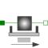
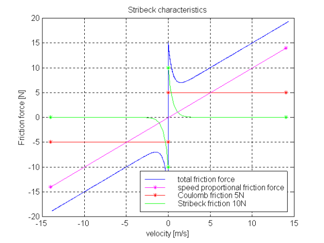

MassWithStopAndFrictionSliding mass with hard stop and Stribeck friction |

|
Information
This information is part of the Modelica Standard Library maintained by the Modelica Association.
This element describes the Stribeck friction characteristics of a sliding mass, i. e. the frictional force acting between the sliding mass and the support. Included is a hard stop for the position.
The surface is fixed and there is friction between sliding mass and surface. The frictional force f is given for positive velocity v by:
f = F_Coulomb + F_prop * v + F_Stribeck * exp (-fexp * v)

The distance between the left and the right connector is given by parameter L. The position of the center of gravity, coordinate s, is in the middle between the two flanges.
There are hard stops at smax and smin, i. e. if
flange_a.s >= smin and flange_b.s <= xmax the sliding mass can move freely.
When the absolute velocity becomes zero, the sliding mass becomes stuck, i.e., the absolute position remains constant. In this phase the friction force is calculated from a force balance due to the requirement that the absolute acceleration shall be zero. The elements begin to slide when the friction force exceeds a threshold value, called the maximum static friction force, computed via:
maximum_static_friction = F_Coulomb + F_Stribeck
This requires the states Stop.s and Stop.v . If these states are eliminated during the index reduction the model will not work. To avoid this any inertias should be connected via springs to the Stop element, other sliding masses, dampers or hydraulic chambers must be avoided.
For more details of the used friction model see the following reference:
- Beater P. (1999):
- Entwurf hydraulischer Maschinen. Springer Verlag Berlin Heidelberg New York.
The friction model is implemented in a "clean" way by state events and leads to continuous/discrete systems of equations which have to be solved by appropriate numerical methods. The method is described in (see also a short sketch in UsersGuide.ModelingOfFriction):
- Otter M., Elmqvist H., and Mattsson S.E. (1999):
- Hybrid Modeling in Modelica based on the Synchronous Data Flow Principle. CACSD'99, Aug. 22.-26, Hawaii.
More precise friction models take into account the elasticity of the material when the two elements are "stuck", as well as other effects, like hysteresis. This has the advantage that the friction element can be completely described by a differential equation without events. The drawback is that the system becomes stiff (about 10-20 times slower simulation) and that more material constants have to be supplied which requires more sophisticated identification. For more details, see the following references, especially (Armstrong and Canudas de Wit 1996):
- Armstrong B. (1991):
- Control of Machines with Friction. Kluwer Academic Press, Boston MA.
- Armstrong B., and Canudas de Wit C. (1996):
- Friction Modeling and Compensation. The Control Handbook, edited by W.S.Levine, CRC Press, pp. 1369-1382.
- Canudas de Wit C., Olsson H., Åström K.J., and Lischinsky P. (1995):
- A new model for control of systems with friction. IEEE Transactions on Automatic Control, Vol. 40, No. 3, pp. 419-425.
Optional heatPort
The dissipated energy is transported in form of heat to the optional heatPort connector that can be enabled via parameter "useHeatPort". Independently whether the heatPort is or is not enabled, the dissipated power is defined with variable "lossPower". If contact occurs at the hard stops, the lossPower is not correctly modelled at this time instant, because the hard stop would introduce a Dirac impulse in the lossPower due to the discontinuously changing kinetic energy of the mass (lossPower is the derivative of the kinetic energy at the time instant of the impact).
Parameters (10)
| L |
Value: Type: Length (m) Description: Length of component, from left flange to right flange (= flange_b.s - flange_a.s) |
|---|---|
| smax |
Value: Type: Position (m) Description: Right stop for (right end of) sliding mass |
| smin |
Value: Type: Position (m) Description: Left stop for (left end of) sliding mass |
| v_small |
Value: 1e-3 Type: Velocity (m/s) Description: Relative velocity near to zero (see model info text) |
| useHeatPort |
Value: false Type: Boolean Description: =true, if heatPort is enabled |
| m |
Value: Type: Mass (kg) Description: Mass |
| F_prop |
Value: Type: Real (N·s/m) Description: Velocity dependent friction |
| F_Coulomb |
Value: Type: Force (N) Description: Constant friction: Coulomb force |
| F_Stribeck |
Value: Type: Force (N) Description: Stribeck effect |
| fexp |
Value: Type: Real (s/m) Description: Exponential decay |
Connectors (3)
| flange_a |
Type: Flange_a Description: Left flange of translational component |
|
|---|---|---|
| flange_b |
Type: Flange_b Description: Right flange of translational component |
|
| heatPort |
Type: HeatPort_a Description: Optional port to which dissipated losses are transported in form of heat |
Used in Examples (2)
|
Modelica.Mechanics.Translational.Examples Use of model Stop |
|
|
Modelica.Mechanics.Translational.Examples Demonstrate the modeling of heat losses |